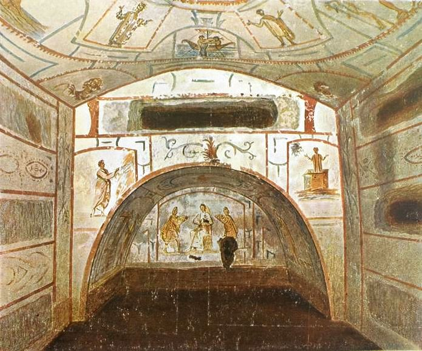
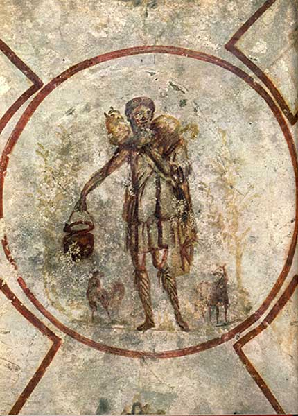
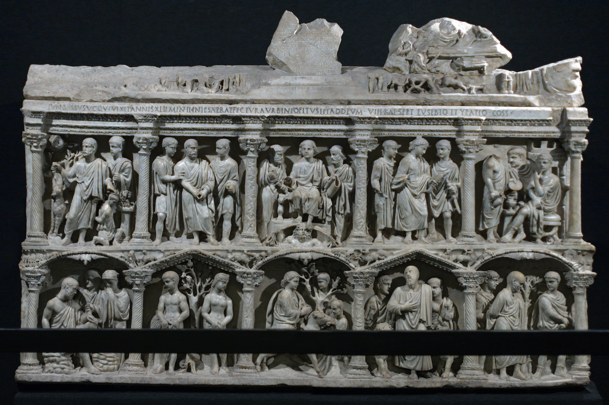
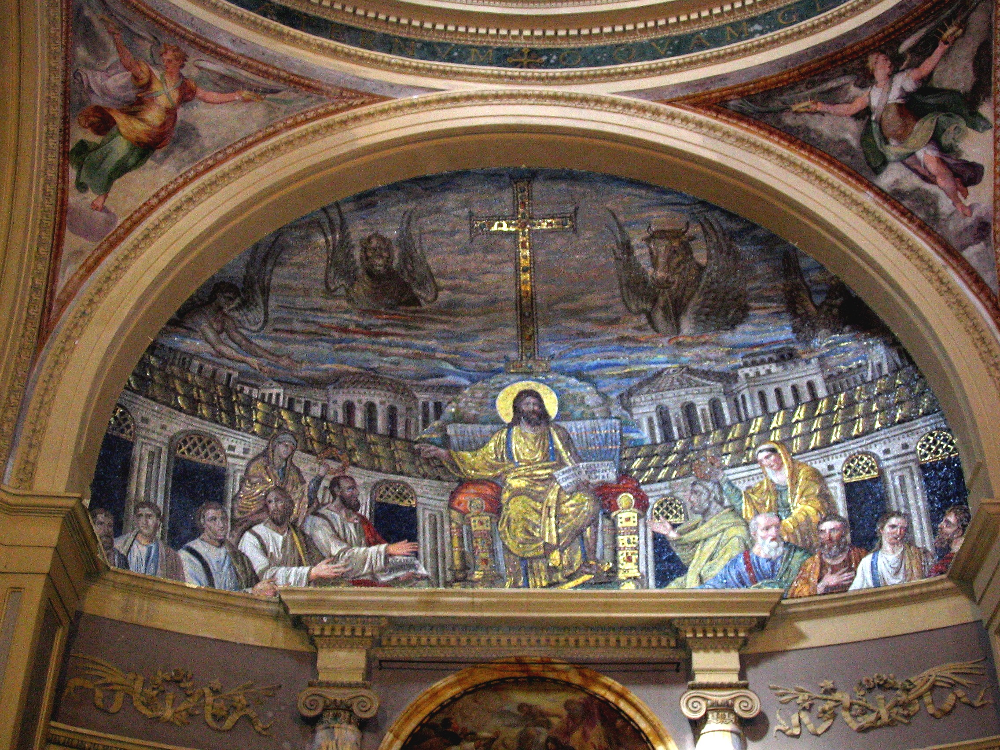
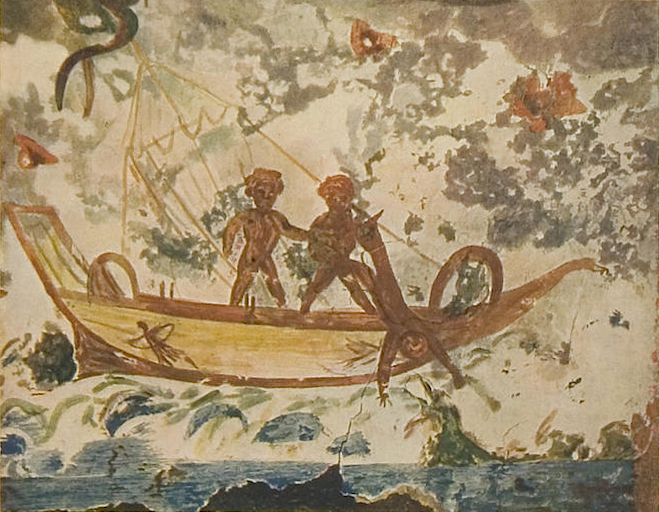
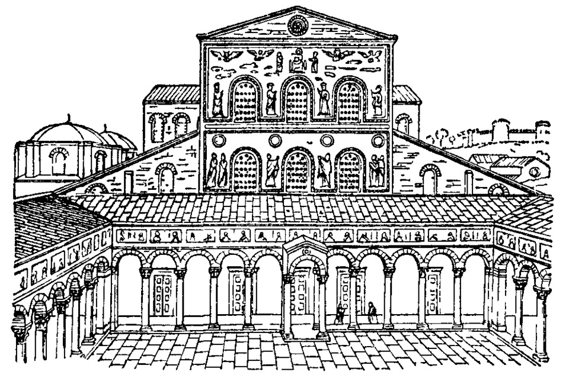
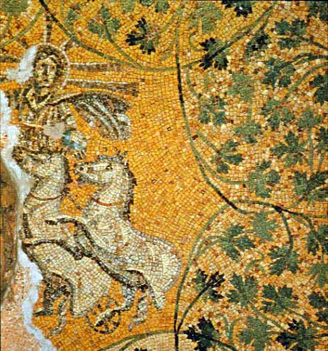
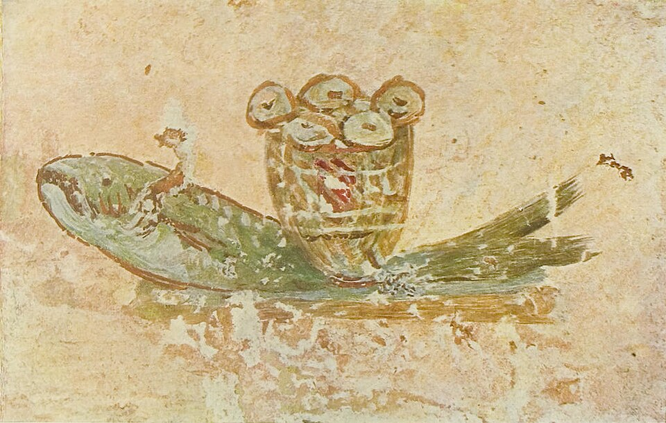
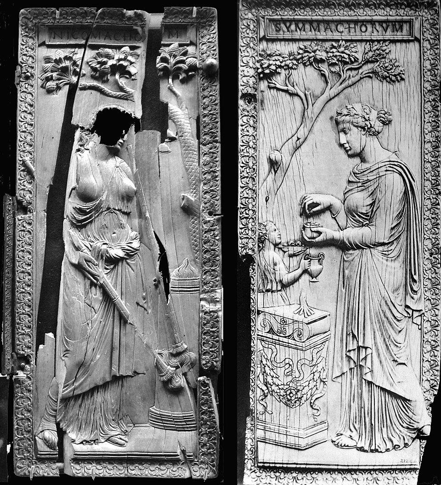
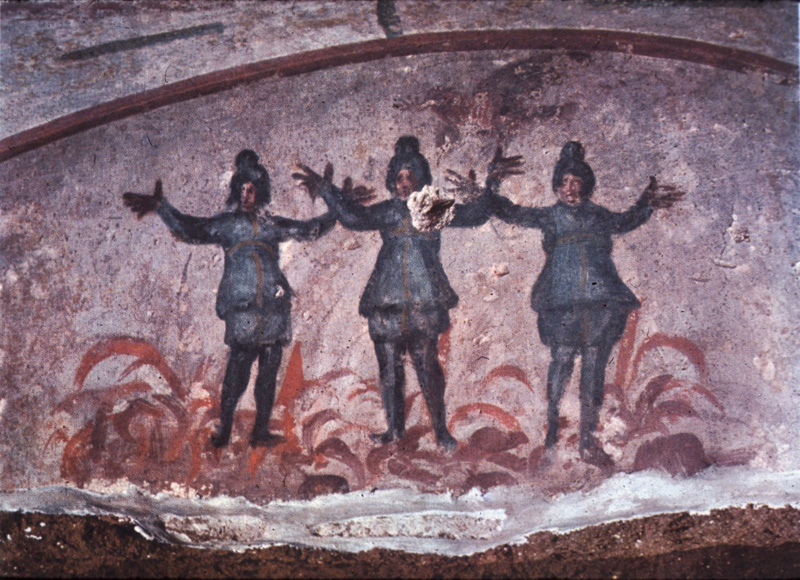

🏆 Meesterwerk: Catacomben van Rome
De oudste christelijke kunst - verborgen fresco's in ondergrondse gangen

Rome, 2e-4e eeuw n.Chr. · Ondergrondse begraafplaatsen
🎨 STIJLFIGUREN & THEMA'S
🐟 Symboliek
Ichthys: Vis als acroniem voor "Jezus Christus, Zoon van God, Redder". Geheim taal.
🖼️ Stijl
Eenvoud: Vlakke figuren, weinig detail. Inhoud belangrijker dan vorm.
📚 Typologie
Oud & Nieuw: Mozes = Christus, Jona = Opstanding. Verbinding Testamenten.
🏛️ Architectuur
Basilica: Romeinse rechtbank werd kerk. Schip, zijbeuken, apsis.
⚰️ Functie
Graf: Meeste kunst in catacomben en op sarcofagen. Dodencultus.
✨ Materiaal
Goedkoop: Fresco, marmer, mozaïek. Geen goud, luxe. Nederigheid.
🎯 Centrale Thema's
- Goede Herder: Christus als herder met schaap - zorgzaamheid, opoffering
- Opstanding: Jona en de walvis, Lazarus, drie mannen in de oven
- Doop: Johannes de Doper, wonderbronnen, naaktheid = onschuld
- Eucharistie: Brood en wijn, mirakel van de broodvermenigvuldiging
- Oranten: Biddende figuren met opgeheven armen - de ziel in gebed
🖼️ TOP 10 MEEST INVLOEDRIJKE WERKEN
1. Catacomben van Priscilla (2e-3e eeuw)
Rome · Ondergronds · Fresco's
Achtergrond: Een van de oudste catacomben. De "Koningin van de Catacomben" genoemd. Bevat de oudste bekende afbeelding van Maria met kind.
🔍 STIJLANALYSE
Fresco: Snel geschilderd, vlak, eenvoudig. Niet voor show, maar voor devotie.
Oranten: Biddende figuren met opgeheven armen. Vrouwelijke Orant = kerk of ziel.
Symboliek: Duif, anker, vis, pa en veulen. Geheim taal voor ingewijden.
2. De Goede Herder (3e eeuw)
Catacomben van Domitilla, Rome · Fresco

Achtergrond: Christus afgebeeld als herder met schaap op schouders. Terugkerend naar de kudde. Een van de oudste Christus-afbeeldingen.
🔍 STIJLANALYSE
Hermes-achtig: Korte tuniek, sandalen, baardloos. Onschuldig, jong.
Symboliek: Schaap = verloren ziel die wordt gered. 99 andere schapen = gemeente.
Ongevaarlijk: Geen koning, geen krijger. Een nederige herder. Veilig voor Romeinen.
3. Sarcaaf van Junius Bassus (359 n.Chr.)
Vaticaanse Museen, Rome · Marmer

Achtergrond: Een van de mooiste vroeg-christelijke sarcofagen. Junius Bassus was prefect van Rome, bekeerd op zijn sterfbed.
🔍 STIJLANALYSE
Tien panelen: Oud- en Nieuwtestamentische scènes. Adam en Eva, Jona, Christus, etc.
Romeinse stijl: Kwaliteit van keizerlijke kunst. Christelijke inhoud, klassieke vorm.
Christus in centrum: Tussen Petrus en Paulus. Boven: troon, onder: hemelpoort.
4. Mozaïeken van Santa Pudenziana (ca. 400 n.Chr.)
Rome · Apsismozaïek

Achtergrond: Een van de oudste apsismozaïeken in Rome. Christus als leraar te midden van apostelen.
🔍 STIJLANALYSE
Klassiek: Nog sterk beïnvloed door Romeinse stijl. Realistische portretten.
Symboliek: Edelstenen op boek, gouden halo's. Begin van christelijke pracht.
Jeruzalem: Achtergrond toont ideale stad. Het hemelse Jeruzalem.
5. Jona en de Walvis (3e eeuw)
Catacomben van Priscilla, Rome · Fresco

Achtergrond: Het verhaal van Jona (drie dagen in de vis) werd gezien als voorafschaduwing van Christus' opstanding.
🔍 STIJLANALYSE
Triptiek: Jona in zee, Jona uitgestoten, Jona rustend onder kalebas.
Typologie: Oudtestamentisch verhaal = voorspelling Nieuwtestamentische opstanding.
Naaktheid: Jona naakt = onschuld, herstelde paradijsstaat.
6. Oudste Sint-Pieter (320-330 n.Chr.)
Vaticaanstad, Rome · Basilica

Achtergrond: Gebouwd door Constantijn boven het graf van Petrus. De eerste grote christelijke kerk. Vervangen door huidige Sint-Pieter (1506-1626).
🔍 STIJLANALYSE
Basilica-plan: Schip, vier zijbeuken, transept, apsis. 120 meter lang.
Romeinse basis: Gebaseerd op Romeinse rechtszaal (basilica). Hergebruik van zuilen.
Doel: Grafkerk. Pelgrims konden langs het graf van Petrus lopen.
7. Christus als Zonnegod (3e eeuw)
Catacomben van Petrus en Marcellinus, Rome · Fresco

Achtergrond: Christus afgebeeld als Sol Invictus (Onoverwinnelijke Zon). Syncretisme tussen christendom en Romeinse religie.
🔍 STIJLANALYSE
Hybriditeit: Christus met zonneklaar, wagen, stralen. Rijdt naar de hemel.
Politiek: Sol Invictus was favoriete god van keizers. Christus als alternatief.
Transformatie: Zon = licht = waarheid = Christus. Theologische adaptatie.
8. Maaltijd van de Zeven (3e eeuw)
Catacomben van Callixtus, Rome · Fresco

Achtergrond: Toont de maaltijd na de wonderbare visvangst. Zeven discipelen aan tafel met brood en vis.
🔍 STIJLANALYSE
Eucharistie: Brood en vis = Christus' lichaam. Zeven = volheid, universele kerk.
Eenvoud: Vlak, weinig detail. Figuren identiek. Collective, niet individueel.
Romeins banket: Gebaseerd op Romeinse diner-scènes. Adaptatie van bestaande vorm.
9. Ivoren diptiek van de Nicomachi en Symmachi (ca. 400 n.Chr.)
Verspreid (Parijs, Londen) · Ivoor

Achtergrond: Laat-classieke ivoren diptiek met heidense offerscènes. Toont de spanning tussen oud en nieuw.
🔍 STIJLANALYSE
Klassiek: Perfecte proporties, natuurlijk movement. Nog volop klassieke traditie.
Politiek: Nicomachi en Symmachi waren heidense aristocraten. Verzet tegen christendom.
Overgang: Dezelfde ambachtslieden maakten heidense én christelijke ivoren.
10. Drie Jongelingen in de Vlammenoven (3e eeuw)
Catacomben van Priscilla, Rome · Fresco

Achtergrond: Het bijbelverhaal (Daniël 3) van drie Joodse jongelingen die weigeren een afgodsbeeld te aanbidden en in de oven worden gegooid maar gered door een engel.
🔍 STIJLANALYSE
Martelaarschap: Joodse jongelingen = christelijke martelaren. Weerstand tegen Rome.
Verlossing: Engel redt uit vuur. God beschermt de gelovigen.
Typologie: Oudtestamentisch verhaal = voorbeeld voor christelijke vervolgingen.
📚 TIJDSGEEST CONTEXT (100-500 n.Chr.)
🌍 POLITIEK PERSPECTIEF
De vroeg-christelijke kunst ontstond binnen het Romeinse Rijk, eerst als verborgen, vervolgde minderheid en later als staatsgodsdienst. Christenen werden in de eerste drie eeuwen periodiek vervolgd: Nero (64 n.Chr.) gebruikte hen als zondebokken voor de brand van Rome, Decius (250) eiste offers aan de keizer, Diocletianus (303-311) voerde de Grote Vervolging. Deze context verklaart de bescheidenheid en symboliek van vroege christelijke kunst: vis, anker, duif waren herkenbaar voor ingewijden maar onschuldig voor buitenstaanders. De catacomben - ondergrondse begraafplaatsen buiten de muren - boden een relatief veilige ruimte voor bijeenkomsten en kunst. De keerpunt kwam met Constantijn (312-337), die na zijn overwinning bij de Milvische Brug het christendom legaliseerde (Edict van Milaan, 313). Plotseling konden christenen openlijk kerken bouwen. Constantijns moeder Helena liet kerken bouwen in het Heilig Land. Theodosius I (379-395) maakte het christendom tot staatsgodsdienst (380) en verbood heidense cultus (391). De kerk werd rijk, machtig, de bouwheer van indrukwekkende basilieken. De val van het West-Romeinse rijk (476) betekende niet het einde van de kerk - integendeel, de kerk vulde het machtsvacuüm en werd de drager van beschaving in de middeleeuwen. De paus van Rome werd de opvolger van de keizer.
📖 LITERAIR PERSPECTIEF
De vroeg-christelijke literatuur begon met de geschriften van het Nieuwe Testament: evangeliën (Marcus ca. 70, Mattheüs en Lucas ca. 80-90, Johannes ca. 95), Handelingen, brieven van Paulus (50-60), Openbaring (ca. 95). Deze teksten vormden de canonieke basis voor alle latere christelijke kunst. De Apostolische Vaders (1e-2e eeuw) - Clemens van Rome, Ignatius van Antiochië, Polycarpus - boden vroege interpretaties. Apologeten zoals Justinus Martyr en Tertullianus verdedigden het christendom tegen heidense beschuldigingen. De kerkvaders van de 3e-5e eeuw ontwikkelden systematische theologie: Origenes' bijbelexegese, Athanasius' verdediging van de incarnatie, Augustinus' belijdenissen en De Civitate Dei. Deze theologische werken definieerden doctrine en iconografie: de Drie-eenheid, de dubbele natuur van Christus, de zondeval en verlossing. Latijnse vertalingen (Vetus Latina, Vulgaat) maakten de bijbel toegankelijk voor het Westen. De literatuur creëerde de symboliek die in kunst werd vertaald: Ichthys (vis), Chi-Rho (Christus-monogram), Lamm Gods, Pelikaan (opoffering). De catacombenschilderingen illustreren bijbelverhalen - Jona, Daniël, de drie jongelingen, de Goede Herder - die in de liturgie werden voorgelezen.
🧠 PSYCHOLOGISCH PERSPECTIEF
De vroeg-christelijke psychologie werd gedomineerd door de spanning tussen deze wereld en de volgende. Het christendom bood hoop op verrijzenis, eeuwig leven, Gods liefde - een radicaal alternatief voor de Romeinse nadruk op eer, roem, materiële welvaart. Het concept van zonde en schuld, beïnvloed door Augustinus' doctrine van de erfzonde, schiep een diep bewustzijn van menselijke onvolmaaktheid en behoefte aan genade. De martelaar - die liever stierf dan zijn geloof te verloochenen - werd het psychologische ideaal: moed, overtuiging, vertrouwen in God. De orant-figuur (biddende met opgeheven armen) verbeeldt de ziel die naar God verlangt. De nadruk op nederigheid, caritas (liefde), vergeving betekende een psychologische revolutie ten opzichte van Romeinse waarden van macht en dominantie. Het kloosterleven (vanaf de 4e eeuw) bood een psychologische toevlucht: ascese, gebed, gemeenschap, vrij van wereldse zorgen. De angst voor het Laatste Oordeel en de hoop op hemel vormden een krachtig emotioneel kader dat alle aspecten van het leven beïnvloedde. De collectieve identiteit van de kerk als "lichaam van Christus" bood psychologische steun in onzekere tijden.
🏛️ HISTORISCH PERSPECTIEF
De vroeg-christelijke kunst ontwikkelde zich in vier fasen. De pre-Constantijnse periode (100-313) zag ondergrondse kunst in catacomben, op sarcofagen, en in huis-kerken (domus ecclesiae). De stijl was eenvoudig, symbolisch, beïnvloed door Romeinse volkskunst. De Constantijnse periode (313-400) bracht openbare kerken: basilieken, centraalbouw, doopkapellen. Santa Maria Maggiore, San Paolo fuori le Mura, de Heilige Grafkerk. Mozaïeken werden rijker, iconografie complexer. De post-Constantijnse periode (400-500) zag de volledige integratie van kerk en staat. Theodosius, Galla Placidia, Justinianus (in het Oosten) bouwden indrukwekkende kerken. De kunst werd monumentaal: mozaïeken in Santa Sabina, de mausoleum van Galla Placidia in Ravenna. De overgang naar Byzantijnse kunst was vloeiend - de mozaïeken van San Vitale (547) zijn zowel vroeg-christelijk als Byzantijns. De technologische context: fresco-techniek (verf op natte pleister), mozaïek (gekleurde tesserae in mortel), sarcofaagproductie (marmer uit deerste eeuwse ateliers). De sociale context: van vervolgde minderheid naar staatskerk, van arme gemeenten naar rijke bisdommen.
💭 FILOSOFISCH PERSPECTIEF
De vroeg-christelijke filosofie was een synthese van bijbelse openbaring en Grieks-Romeinse wijsbegeerte. Platonische ideeën (de onsterfelijke ziel, de transcendentie God) werden geassimileerd en getransformeerd. Augustinus (354-430) verenigde Platonisme met christelijke theologie: de ziel kent God door introspectie, de wereld is schaduw van het goddelijk licht. Het neoplatonisme van Plotinus (204-270) beïnvloedde zowel heidense als christelijke denkers. De discussies over de natuur van Christus (mens? God? Beide?) leidden tot concilies: Nicea (325), Constantinopel (381), Efeze (431), Chalcedon (451). De doctrine van de Drie-eenheid - één God in drie personen - werd geformaliseerd. Esthetisch gezien ontwikkelde de kerk een theologie van het beeld: mochten beelden van Christus en heiligen worden gemaakt? Het Tweede Gebod verbood afgodsbeelden, maar de incarnatie (God werd mens) rechtvaardigde menselijke afbeelding. De catechumenen (doopleerlingen) werden voorbereid door preken en rituelen; de gedoopten hadden toegang tot de eucharistie en de volledige liturgie. De filosofie van de kerkvaders bepaalde wat wel en niet kon worden afgebeeld, welke symbolen correct waren, welke scènes geschikt voor welke context (doop, graf, altaar).
📚 CONCLUSIE: DE EERSTE STAP
De vroeg-christelijke kunst leert ons:
- Bescheidenheid: Kunst begon in het verborgene, arm en eenvoudig
- Symboliek: Geheim taal voor ingewijden - vis, anker, duif
- Transformatie: Van vervolgde sekte naar staatsgodsdienst in drie eeuwen
- Typologie: Oudtestamentische verhalen als voorspelling van Christus
- Continuïteit: Romeinse vormen, christelijke inhoud
"De vroeg-christelijke kunst is de eerste taal van een nieuwe wereldbeschouwing." - André Grabar